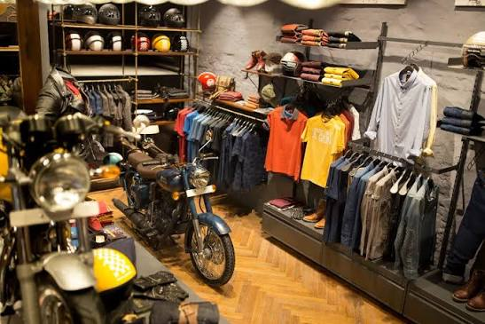
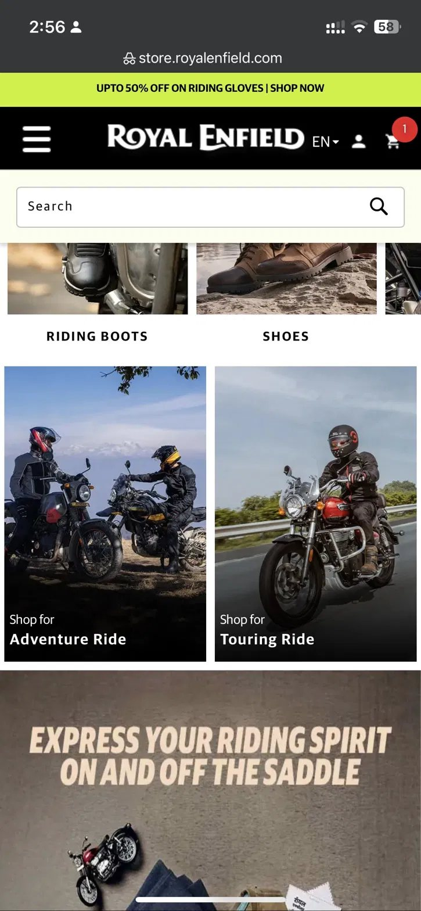
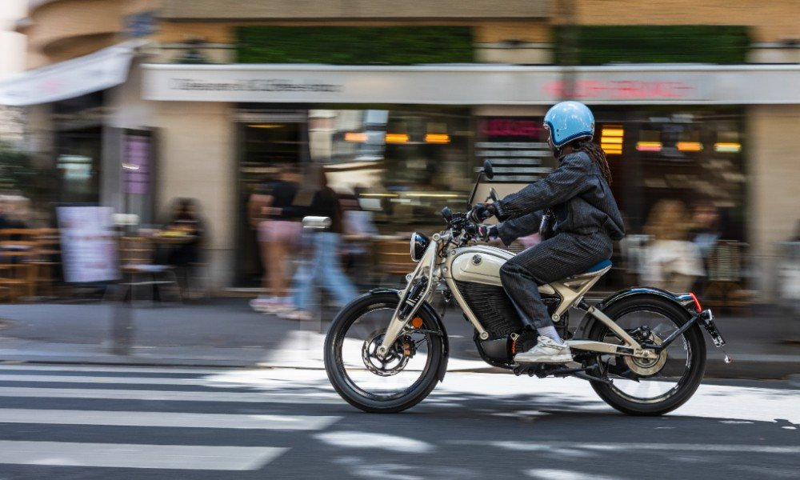
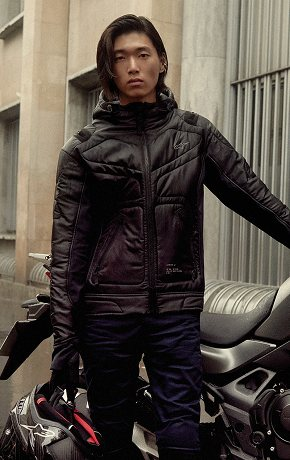
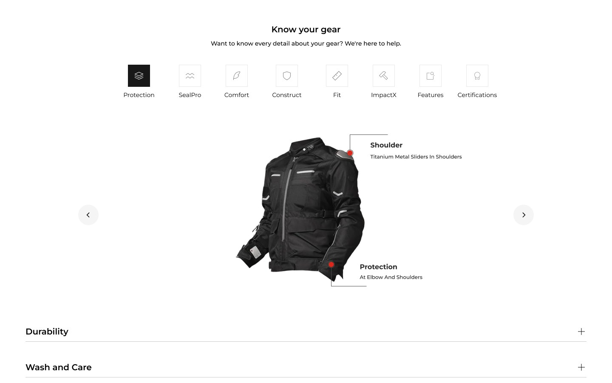
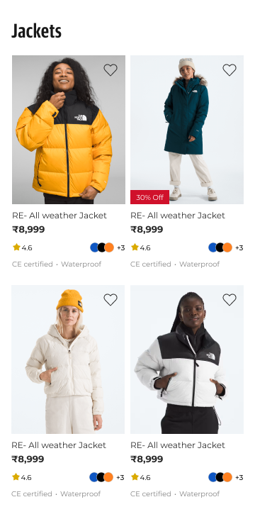
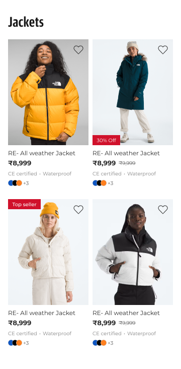

The brief
Tell the story of Royal Enfield’s apparel.
The brief was a rebrand of Royal Enfield’s online apparel store. For its riders, riding isn’t a hobby, it’s a lifestyle, and it comes with a brotherhood. The online store had to show both, without losing any of the class the brand is known for.


Where things stood
The brand’s own store was losing to itself on marketplaces.
Most of Royal Enfield’s online apparel sales came through third-party marketplaces, not the brand’s own store. Marketplaces even outranked royalenfield.store in search results.
- #1amazon.in
- #2flipkart.com
- #3myntra.com
- #4royalenfield.store
Searching “royal enfield riding jacket”. Illustrative.
On a marketplace, it’s just another listing.
Marketplaces win on reviews and comparison. The brand store is the only place that can explain the product well.
MarketplaceAmazon, Flipkart, Myntra
- See reviews and comments from other buyers
- Compare brands side by side
- Familiar checkout, with saved addresses and payments
- Frequent sales and offers
- Can’t fully understand the product
- No brand story, just another listing
Brand storeroyalenfield.store
- Full understanding of the product
- The story and culture behind the gear
- Know the science and tests behind your product
- Exclusive collaborations with luxury brands not sold in India
- Fewer reviews to lean on
- No easy way to compare with other brands
Even on its own store, people looked but didn’t buy.
The store’s analytics told the rest of the story.
96%
of product views ended without an add to cart. People were interested, just not convinced.
85%
of visitors shopped on their phones, where pages took close to 20 seconds to load.
Nearly half
of all sales came from riding gear, the one category a rider can’t compromise on.
Different stakeholder needs
Push deals, and still look premium?
Our stakeholders wanted different things from the same store, and both had a point.
Who is this for?
Not everyone who buys Royal Enfield rides one.
The store had to serve bikers and non-bikers alike. Getting the personas right meant understanding each group and how they already shop, then mapping it out for the client.

Rider
City
- Short, everyday rides
- Light gear that still works off the bike

Rider
Touring
- Long days on the highway
- Comfort and weather protection
Rider
Adventure
- On and off the road
- Tough, protective gear built to take a fall
Doesn’t ride
Non-riders
- Buying into the brand and its look
- Shopping casual wear, not technical gear
- Comparing it with every other apparel brand
Benchmarking
We looked at brands that already have what Royal Enfield has.
Patagonia, Columbia and The North Face all make highly technical apparel, with strong brand stories and fiercely loyal users. So does Royal Enfield. The difference is that theirs show up on their websites.
| Quality | Patagonia | Columbia | The North Face | Royal Enfield |
|---|---|---|---|---|
| Technical apparel | ✓ | ✓ | ✓ | ✓ |
| A strong brand story | ✓ | ✓ | ✓ | ✓ |
| Loyal users | ✓ | ✓ | ✓ | ✓ |
| All of it, on their website | ✓ | ✓ | ✓ | ✕Not yet |
Each one showed us how a website can carry the story and the community, and still sell technical gear.
All of it came down to two questions.
- 01How does a rider decide on a ₹30,000 jacket in a store, and how do we give them that online?
- 02Why would someone shopping on Amazon buy from the Royal Enfield store instead?
Question 1 · Offline vs online
So I asked riders how they actually buy their gear.
Each helmet is one in twenty of the riders I spoke to.
-
35%
Amazon, after the reviewsBuy on a marketplace once other buyers vouch for it
-
30%
Try offline, buy onlineCheck or try it on in a store, then order online
-
20%
Online, no store visitBuy without ever shopping offline
-
15%
Offline onlyOnly buy what they can touch
And when it’s down to two jackets, how do they pick?
Only works in a store.
Found on social media, not on the store.
Hard proof the jacket will protect them.
No marketplace shows certifications. The one thing that makes the decision easier for riders was missing everywhere they shopped. So the Royal Enfield store puts it up front.
Then we built the store around those answers.
Certifications, collaborations and the story behind the gear, all on the page. And with 85% of visitors on their phones, every page started at phone size.
Question 2 · Amazon vs the store
Give riders what Amazon can’t.
Let riders interact with their gear.

Putting it on the product card.
We tried three versions of the product listing card, each carrying less than the last. The one with the least information was the one we recommended: the photo does the selling, and only what a rider needs to decide stays.
-

Version 1Ratings, swatches, certifications
-

Version 2Tags, original price, swatches
-

Version 3 RecommendedPrice, certifications, quick add
Images do most of the talking.
On a product page, the photo sells before any copy does. So we asked Royal Enfield to move to premium imagery that matches the brand.

Different stakeholders. One middle ground.
Deals or premium was never going to be settled by picking a side. We got to a middle ground by thinking it through with our stakeholders, as one team.
As of today, the redesign is partially live, with the rest rolling out.
Visit store.royalenfield.com